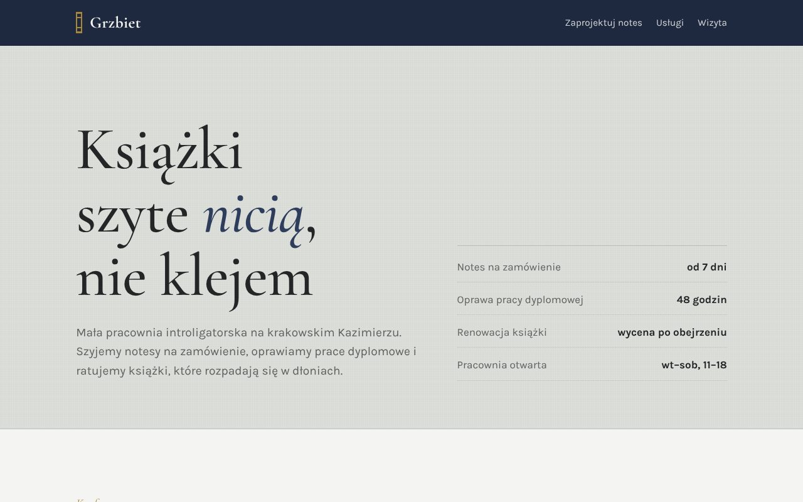
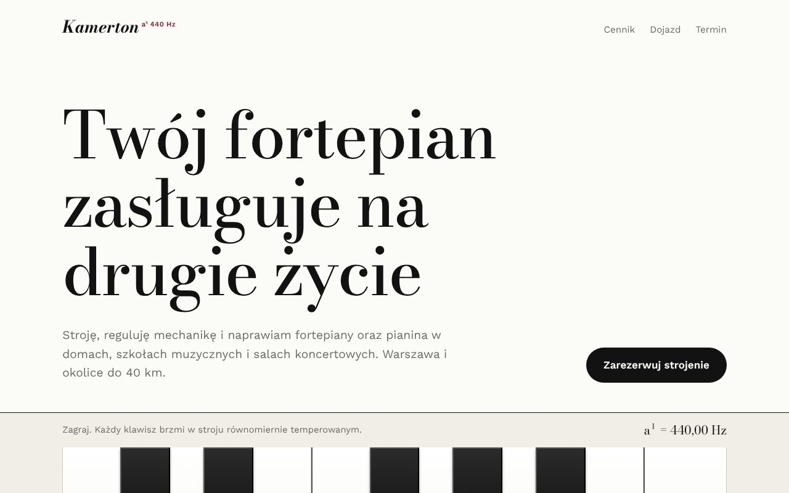
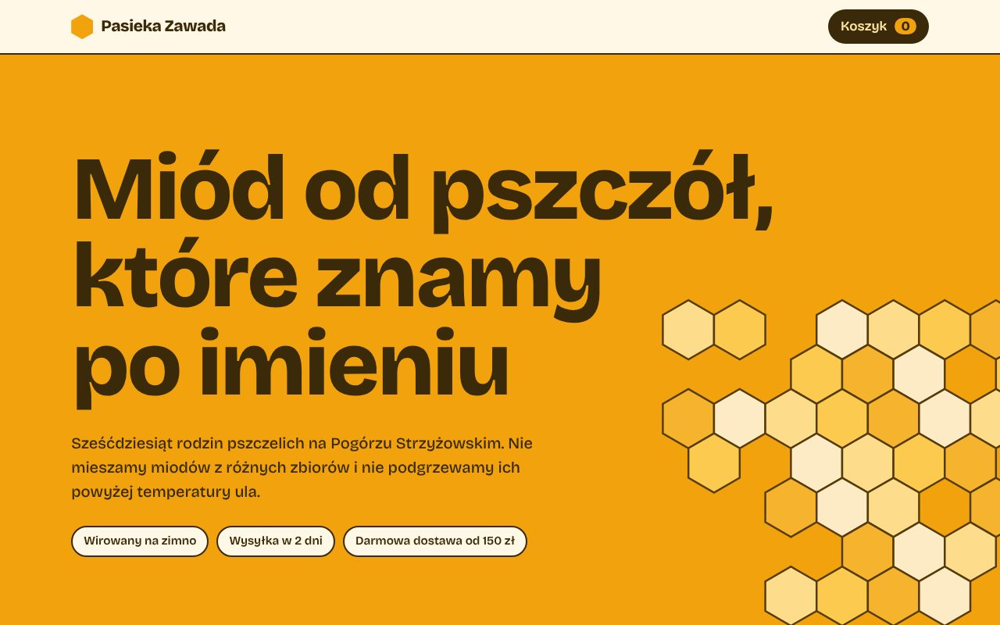
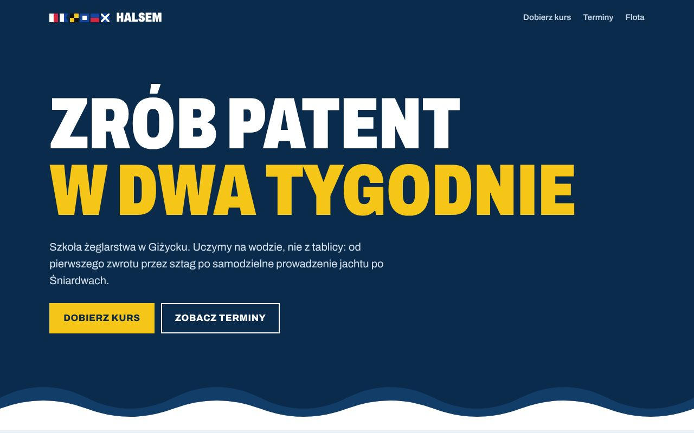
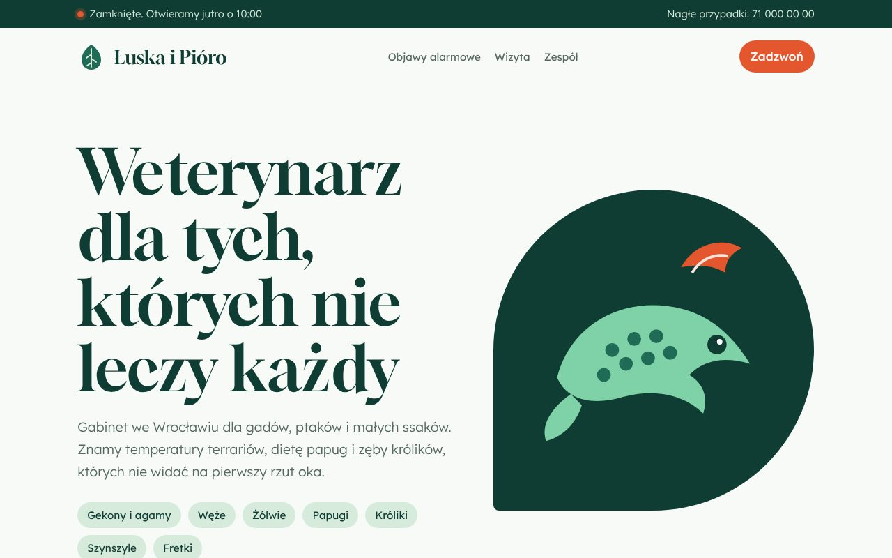
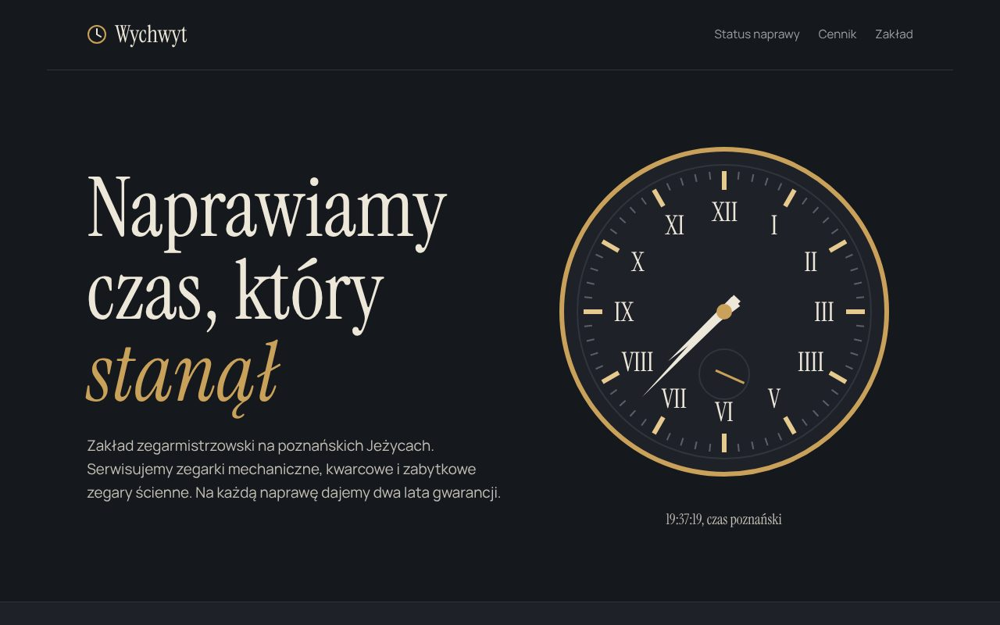
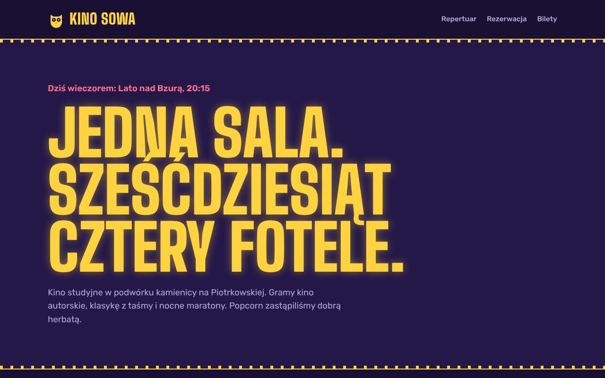
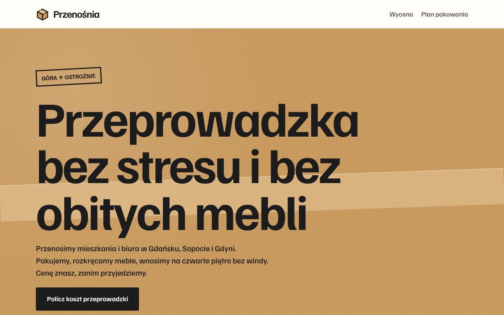

Wizytówka
od 1 500 zł
Jedna przejrzysta strona: kim jesteś, co robisz, gdzie Cię znaleźć.
- do 5 sekcji na jednej stronie
- mapa, godziny i telefon
- gotowa w około tydzień
Projektuję i prowadzę strony dla lokalnych firm: kawiarni, warsztatów, salonów i gabinetów. Każda jest robiona od zera, pod konkretną firmę i jej klientów.
Osiem stron pokazowych dla bardzo różnych firm. Każda ma własny wygląd i funkcję dopasowaną do branży. Kliknij, żeby otworzyć działającą stronę.

Introligatornia, Kraków Pracownia Grzbiet Konfigurator notesu: format, okładka, kolor i tłoczenie inicjałów z podglądem i ceną na żywo. Otwórz stronę
Stroiciel fortepianów, Warszawa Kamerton Grająca klawiatura, sprawdzanie dojazdu po kodzie pocztowym i rezerwacja wizyty w kalendarzu. Otwórz stronę
Pasieka, Podkarpacie Pasieka Zawada Kalendarz miodobrania z bieżącym miesiącem i sklepik z koszykiem oraz progiem darmowej dostawy. Otwórz stronę
Szkoła żeglarstwa, Giżycko Halsem Quiz, który w czterech pytaniach dobiera kurs, i tabela terminów z wolnymi miejscami. Otwórz stronę
Weterynarz zwierząt egzotycznych, Wrocław Łuska i Pióro Lista objawów, która podpowiada, czy przyjechać dziś, i godziny otwarcia na żywo. Otwórz stronę
Zakład zegarmistrzowski, Poznań Wychwyt Sprawdzanie statusu naprawy po numerze zlecenia i tarcza zegara, która pokazuje prawdziwy czas. Otwórz stronę
Kino studyjne, Łódź Kino Sowa Repertuar na cały tydzień, plan sali z wyborem miejsc i podsumowanie biletu. Otwórz stronę
Przeprowadzki, Trójmiasto Przenośnia Kalkulator kosztu przeprowadzki: metraż, odległość, piętra bez windy i usługi dodatkowe. Otwórz stronęFirmy i dane na stronach pokazowych są fikcyjne.
Ceny zależą od zakresu, ale zawsze znasz kwotę przed startem. Każda strona działa na telefonie, ładuje się szybko i jest przygotowana pod Google.
od 1 500 zł
Jedna przejrzysta strona: kim jesteś, co robisz, gdzie Cię znaleźć.
od 3 000 zł
Pełna strona z ofertą, galerią i formularzem kontaktowym.
Najczęściej wybierana
wycena indywidualna
Gdy klienci mają zapisywać się na wizyty albo kupować online.
Po starcie dbam o stronę dalej. Piszesz, co zmienić, a ja to robię. Zakres i cenę dobieramy do wielkości strony.
Pierwsze 3 miesiące opieki w cenie strony
Od pierwszej rozmowy do działającej strony zwykle mijają dwa tygodnie.
Dwadzieścia minut przez telefon albo przy kawie. Pytam o firmę, klientów i to, czego oczekujesz. Bez opłat.
W ciągu tygodnia dostajesz link do pierwszej wersji strony. Oglądasz ją na swoim telefonie, a nie na rysunku.
Nanoszę Twoje uwagi, podpinam domenę i pocztę, zgłaszam stronę do Google.
Po starcie dbam o stronę dalej. Jedna wiadomość wystarczy, żeby zmienić cennik czy godziny.
WebFolk to moja pracownia. Robię strony dla firm, które znam z ulicy: piekarni, warsztatów, gabinetów i salonów. Wierzę, że mała firma zasługuje na stronę tak samo dopracowaną jak duża.
Pracujesz bezpośrednio ze mną, bez pośredników i działu obsługi klienta. Odbieram telefon także po wdrożeniu.
Nie. Pomogę wybrać i zarejestrować domenę, a hosting jest w cenie opieki nad stroną.
Tak, w pakiecie Strona firmowa dostajesz prosty panel do zmiany tekstów, zdjęć i cennika. Możesz też po prostu napisać do mnie.
Napiszę teksty na podstawie naszej rozmowy, a zdjęcia dobierzemy z banków zdjęć albo umówimy krótką sesję.
Połowa przed startem, reszta po Twojej akceptacji gotowej strony. Wystawiam fakturę.
Napisz albo zadzwoń. Odpowiadam w ciągu jednego dnia roboczego.
Telefon
+48 504 087 240